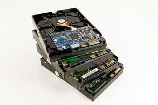

Monday 16 Sep 2024
Convert from ZFS mirror to raidz

Image copyright.
I have a 4 TB ZFS mirror pool over two disks. The has become 56% full, but was thinking about futureproofing this set-up. Since using ZFS, I have always done so in a mirror. My storage started with 1 TB x2 disks, then I upgraded to 2 TB, then I upgraded to 4 TB. Due to costs, I did not want to keep doing this upgrade path as the disks sizes increase. I had to consider other options.
Here are my options:
- Upgrade two of the 4 TB hard drives, one-by-one
- Add two new drives as a new vdev
- Reconfigure to raidz1
I decided to go with RAIDZ1. I like cost saving / GB capacity by only needing three drives and getting the capacity of two combined, and if I lose two drives it would be annoying but I do have backups. I had previously opted for the mirror vdev when the pool was in a previous PC with limited space and SATA ports. Now I have a large case and a server motherboard with 6 SATA (4x 6.0 Gbps ports) to add more drives; I am happy with this board because I know have 32 GB of ECC RAM goodness.
This is my pool config before upgrade project.
Started with:
- mirror-0
* Hard drive 4 TB
* Hard drive 4 TB
Here's how I did the transition:
Firstly, I removed one of the hard drives in the mirror vdev. I now have a spare 4 TB hard drive. I formatted it into two partitions, roughly 2 TB each. I also added a WD Red Pro 2 TB hard drive to up the second disk. Therefore, I have two physcial disks acting as three disks.
I created a new pool:
- raidz1-0
* Hard drive 4 TB - part 1
* Hard drive 4 TB - part 2
* Hard drive 2 TB
Part 1 and 2 are the partitions of the single disk. This would be considered unsafe to use in production, but I am only doing so to move data and I will then replace later.
I wanted to retain settings and snapshots so I used -R and --raw (these datasets are encrypted); if you are not using encryption or the dataset is unlocked you can omit the --raw flag.
zfs send -R --raw pool/dataset@[snapshotdate] | zfs recv pool2/dataset
Once completed, I ran a scrub to ensure data integrity.
At this point, I still have all data on one hard drive (on the original pool), and now on the new pool (plus backups elsewhere). I can only tolerate the loss of the 2 TB hard drive, because if I lose the 4 TB hard drive, I will lose both partitions, effectively losing two hard drives in the eyes of ZFS.
I put the original pool offline and cleared the disk, after first verifying sizes of copied datasets. I used this newly-wiped 4 TB hard drive to replace part 2 (the second and final disk in the mirror) of the other 4 TB hard drive. This was the most dangerous stage of the process.
The new layout was as follows:
• raidz1-0 * Hard drive 4 TB - part 1 * Hard drive 4 TB * Hard drive 2 TB
I am safe now and have redundancy. If either drive fails, I am able to reconstruct the data. But I cannot leave the layout like this. I need to expand the partition of the 4 TB hard drive.
Final step was to offline the pool and adjust the partition.
I used fdisk to delete old partition 1, then create a new one on top which simply expands the partition without deleting data. I
After these steps I now had a happy pool again:
- raidz1-0
* Hard drive 4 TB
* Hard drive 4 TB
* Hard drive 2 TB
Total pool size: 5.45 TiB
Percent used: 52%
I since found out that you can add just two disks to a raidz1, which will make the pool degraded but once data is copied, you can then attach the disk you copied data from to then fix the pool; this saves creating a disk with two partitions.
Backlinks:
index
Journal:Index
Journal:2024:09